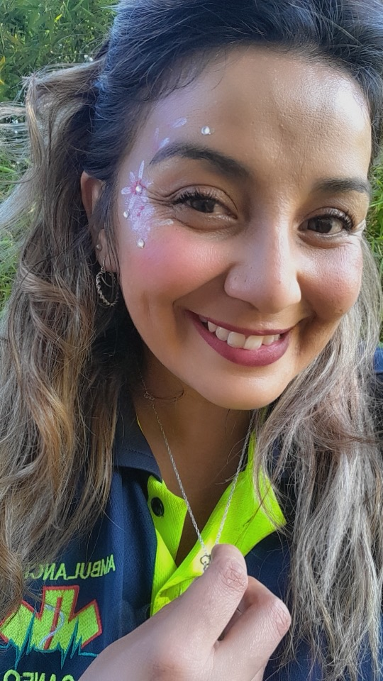
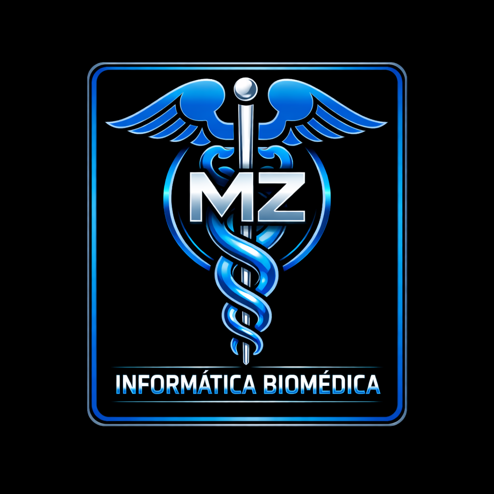
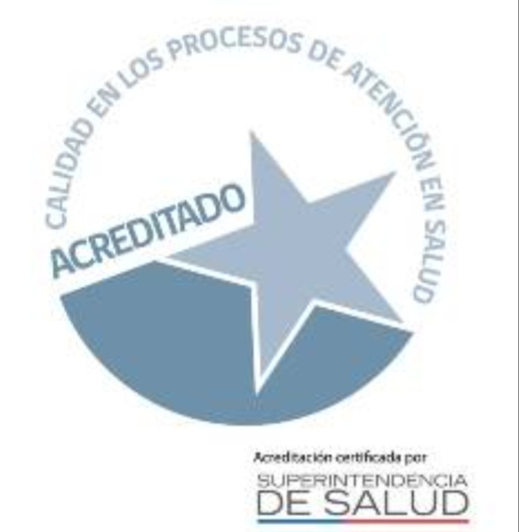
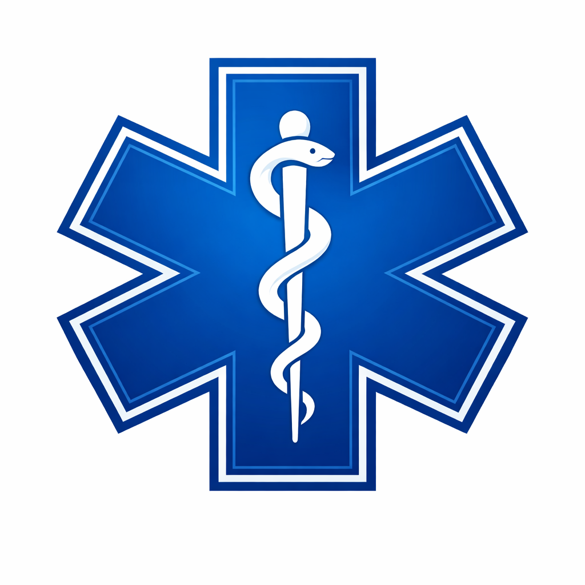

TENS con amplia experiencia en UCI, cuidados críticos y atención domiciliaria. Realizo curaciones avanzadas, administración de medicamentos, manejo de dispositivos (SNG, PEG, traqueostomía, colostomía), monitoreo clínico. Atención profesional, segura y personalizada directamente en tu hogar.

Técnico Superior en Enfermería con más de 16 años de experiencia especializada en pacientes críticos. Atención domiciliaria segura, humana y confiable. cuidados críticos y atención domiciliaria. ofrezco cuidados clínicos seguros, humanizados y basados en evidencia directamente en tu hogar.

Duoc UC | experiencia en uci, uti, upc y cuidados críticos.

Duoc UC | salud digital, HIS, interoperabilidad y datos clínicos.
zona de atención: puente alto, la florida, san bernardo, pirque y alrededores.
whatsapp: +56 9 5875 8398
email: melissazamoranolevy34@gmail.com
linkedin: linkedin.com/in/melissa-z-7713a4217
atención profesional, segura y personalizada directamente en tu hogar.